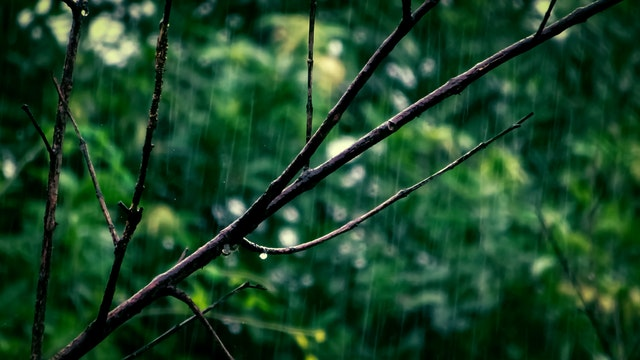
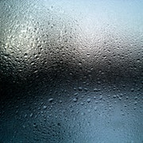
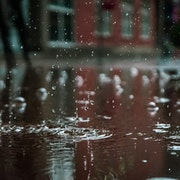
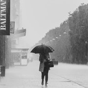
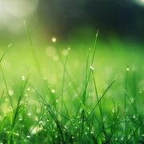

Rain Lovers' Club
why rain?
is rain good?
about rain
Welcome, rain lovers!
Do you or someone you know love rain? Then you are at the right place! Join us today by signing up!
Sign up

Photo by brazil topno from Pexels
Types of rain
Drizzle

Photo by Aleksandr Slobodianyk from Pexels
Your Everyday Rain

Photo by Vlad Chețan from Pexels
Downpour

Photo by Misael Silvera from Pexels
Summer rain

Photo by Johannes Plenio from Pexels
"I like it when it rains hard. It sounds like white noise everywhere, which is like silence but not empty."
- Mark Haddon, English novelist
Join our Rain Lovers' Club today!
Sign up for our newsletter by clicking that button right over there!
Sign up